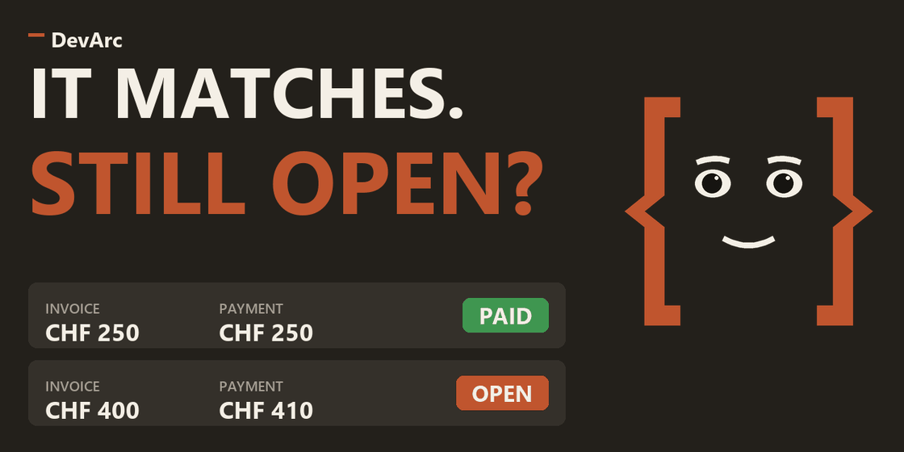

<section class="oe_container">
    <div class="oe_row oe_spaced">
        <h2 class="oe_slogan">DevArc QR Reconcile</h2>
        <h3 class="oe_slogan">Match Swiss QRR and SCOR payments from camt files to customer invoices</h3>
        <p class="oe_mt32">For Swiss companies on Odoo 18 Community that send QR-bills and import camt.053 or camt.054 bank files. Incoming payments with a QR-reference (QRR) or Creditor Reference (SCOR) are matched to the open customer invoice on top of the OCA bank statement import and reconciliation.</p>
        <div class="oe_span12">
            
        </div>
        <h3 class="oe_mt32">How it works</h3>
        <ul>
            <li>Reads the QRR or SCOR reference from the reference, label and notes of camt.053 and camt.054 statement lines. Spaces are ignored, QRR needs a valid modulo 10 check digit, SCOR a valid ISO 11649 check.</li>
            <li>Links the line only when exactly one posted, open customer invoice of the same company has that payment reference and the line amount is positive.</li>
            <li>The linked invoice is proposed in the OCA reconciliation widget instead of the generic OCA invoice matching.</li>
        </ul>
        <h3 class="oe_mt32">Journal setting: QR Reference Matching</h3>
        <ul>
            <li>Mark matched invoice (default): the invoice is linked on the statement line and proposed in the reconciliation widget. Nothing is reconciled automatically.</li>
            <li>Reconcile exact matches: the line is reconciled automatically only when the amount equals the invoice residual, there is one invoice, the currency is the same, the amount is positive and, if the line has a partner, it is the partner of the invoice.</li>
            <li>Partial payments, overpayments and other currencies are only linked and proposed. A reference that matches no open invoice or more than one links no invoice; the line is listed under the filter QR Reference Without Invoice.</li>
        </ul>
        <h3 class="oe_mt32">Filters</h3>
        <p>Bank statement lines: QR Invoice Found (linked open invoice, line not reconciled) and QR Reference Without Invoice (reference found, no unique open invoice, line not reconciled). The list also shows the QR invoice column.</p>
        <h3 class="oe_mt32">Limitations</h3>
        <ul>
            <li>Vendor payments (negative amounts) are left to OCA.</li>
            <li>On Odoo 18 the OCA rule Perfect Match requires a partner, so a debit for a vendor bill without a partner is left to manual reconciliation.</li>
            <li>Importing the same camt file twice creates the lines twice, the OCA camt import has no deduplication.</li>
        </ul>
        <h3 class="oe_mt32">Requirements</h3>
        <p>OCA modules account_reconcile_oca (OCA/account-reconcile), account_statement_import_camt, account_statement_import_camt54 and account_statement_import_file_reconcile_oca (OCA/bank-statement-import), branch 18.0. License AGPL-3.</p>
        <h3 class="oe_mt32">Video</h3>
        <div class="row">
            <div class="col-md-6 mb-4">
                <a href="https://youtu.be/EXF_1ktpaHc" target="_blank" rel="noopener">
                    
                </a>
                <p class="mt-2"><strong>DevArc QR Reconcile</strong><br/>Walkthrough of the camt import and the QR reference matching. <a href="https://youtu.be/EXF_1ktpaHc" target="_blank" rel="noopener">Watch on YouTube</a></p>
            </div>
            <div class="col-md-6 mb-4">
                <a href="https://youtu.be/f1qQrzFjM_E" target="_blank" rel="noopener">
                    
                </a>
                <p class="mt-2"><strong>Related add-on: DevArc QR Invoice</strong><br/>Imports vendor Swiss QR-bills from scanner text, PDF or photo and checks customer QR-bills. <a href="https://youtu.be/f1qQrzFjM_E" target="_blank" rel="noopener">Watch on YouTube</a></p>
            </div>
        </div>
        <h3 class="oe_mt32">Read more</h3>
        <p>Blog article: Swiss QR-bills in Odoo Community, from import to reconciliation.</p>
        <ul>
            <li><a href="https://devarc.ch/blog/knowledge-3/swiss-qr-bills-odoo-community-import-reconciliation-11" target="_blank" rel="noopener">English</a></li>
            <li><a href="https://devarc.ch/de/blog/wissen-3/qr-rechnung-odoo-community-import-abgleich-11" target="_blank" rel="noopener">Deutsch</a></li>
            <li><a href="https://devarc.ch/sk/blog/vedomosti-3/qr-faktury-odoo-community-import-parovanie-platieb-11" target="_blank" rel="noopener">Slovensky</a></li>
        </ul>
        <h3 class="oe_mt32">Source and support</h3>
        <ul>
            <li>Source code: <a href="https://github.com/devarc-gmbh/devarc-odoo-addons/tree/18.0/devarc_qr_reconcile" target="_blank" rel="noopener">https://github.com/devarc-gmbh/devarc-odoo-addons/tree/18.0/devarc_qr_reconcile</a></li>
            <li>Website: <a href="https://devarc.ch" target="_blank" rel="noopener">devarc.ch</a></li>
            <li>Contact: <a href="mailto:odoo@devarc.ch">odoo@devarc.ch</a></li>
        </ul>
        <p>Made by <a href="https://devarc.ch" target="_blank" rel="noopener">DevArc GmbH</a>, Switzerland.</p>
    </div>
</section>
